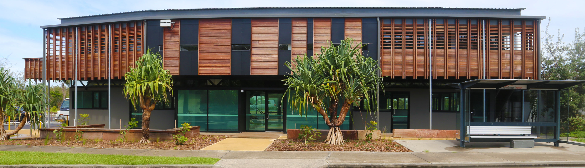

<section class="imagebg videobg height-60 text-center" data-overlay="4">	
	<video autoplay loop muted>
		<source src="../video/hub_drone.webm" type="video/webm">
		<source src="../video/hub_drone.mp4" type="video/mp4">
		<source src="../video/hub_drone.ogv" type="video/ogv">
	</video>		
	<div class="background-image-holder">
		
	</div>
  <div class="container pos-vertical-center">
      <div class="row">
	        <div class="col-sm-10">
            <h1>
								{{ page.covertitle }}
            </h1>
	            <!--end of modal instance-->
	        </div>
      </div>
      <!--end of row-->
  </div>
</section>